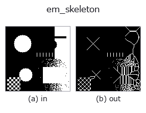

region op• データ種: region → region
• 呼び出し: fullseye.apply(img, "em_skeleton", a=0.5, b=0.5) (2-D は 1 画像 + 2 スカラつまみ a,b∈[0,1] のモデル)

*図は合成の入力 128×128 で実際に走らせた出力。左が入力、右が出力。点群は上から見た散布(明るさ = z)、1-D 列は折れ線、体積は z 方向の最大値投影、動画は中央フレーム、複素画像は振幅、絵にならない返り値は値そのもの。*
*つまみ a は出力を変えない(実測: 0.1 / 0.5 / 0.9 で同一)。*
*つまみ b は出力を変えない(実測: 0.1 / 0.5 / 0.9 で同一)。*
段階(前置きの op → この op。左から順):
▸ em_skeleton: stages (docs site)
別の画像でも(合成シーン / 写真 / 硬貨。上段が入力、下段がその出力。つまみは既定):
▸ em_skeleton: other inputs (docs site)
Eckhardt–Maderlechner 型の不変細線化(HALCON skeleton と同系統)。
出典: U. Eckhardt, G. Maderlechner, "Invariant Thinning",
Int. J. Pattern Recognition and AI 7:1115-1144 (1993)。実装規則は
M. Couprie "Note on fifteen 2D parallel thinning algorithms" の EM93
定義に従うクリーンルーム実装。**同ノートが公表する EM93 の参照出力と
突き合わせ済み**: 形状 1 は骨格の画素集合がビット単位で一致(724/724)、
形状 2/3 は画素数が公表値と一致(2434 / 3895)。
tests/test_regions2.py::test_em_skeleton_matches_published_em93_reference。
(HALCON 実機との直接照合は未実施だが、HALCON が拠る同じ公表アルゴリズムの
参照出力と一致している):
interior = 4 近傍がすべて前景の画素
simple = (8,4) 単純点(前景 8 連結成分 1 個 ∧ 接する背景 4 連結成分 1 個)
perfect = ある 4 方向の隣が interior で、その反対方向が背景
「simple かつ perfect な画素を全部同時に消す」を不動点まで反復
注: ノートの転記を字義どおり「強(4)連結成分のみで simple を数える」と
実装すると並列削除が斜め橋を同時に落とし位相が壊れる(反例で実測)。
simple を標準の (8,4) 単純点にした本実装が参照出力とビット単位で
一致したので、これが EM93 の正しい読みだと裏付けられている。
完全並列・対称(90 度回転/鏡映と可換)・位相保存・冪等。Zhang–Suen 系の
sk_skeleton より枝を多く残す(実測 1.4〜1.5 倍の画素数 = Couprie の
比較表で EM が対称・枝多である性格と整合)。ヒゲは pruning で後処理する
流儀も HALCON と同じ。つまみ a, b は未使用。
• サンプルデータ カタログ(DL URL / ライセンス) — 2-D は skimage.data(BSD/public)+ 合成、3-D は実データ源(Stanford/PDS 等)の DL URL。
• 演算子の来歴・参考文献 — この op 族の元になった研究/手法の出典。
• アルゴリズムの正典(著者・年)と用途は上記ファミリ使い方ガイドに記載。
下のプログラムは実際に走ることを確かめてある(図と同じ入力)。Studio のヘルプではこのブロックがボタンになり、その場で読み込んで実行できる。
threshold 0.50 0.50 em_skeleton 0.50 0.50
▸ Load this pipeline · Load & run
• gallery2d_region — py -3.11 examples/gallery2d_region.py
region を入力に取れる)identity · reg_erode · reg_dilate · reg_open · reg_close · fill_holes · select_largest · remove_small
region)reg_erode · reg_dilate · reg_open · reg_close · fill_holes · select_largest · remove_small · invert_region
*Provenance: ops.py — 2D operator registry. この per-op ノートは tools/opdocs.py md が自動生成(手編集しない)。*
© 2026 Kazufumi Furuse — Fullseye operator documentation. Licensed under Apache-2.0.
{kind=link}
{kind=link}